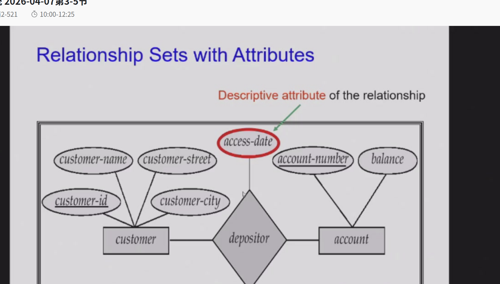
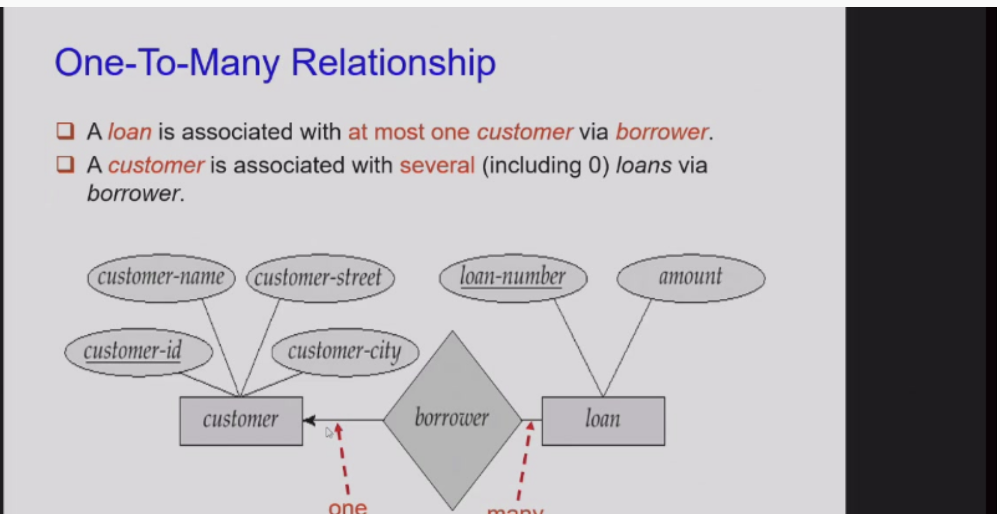
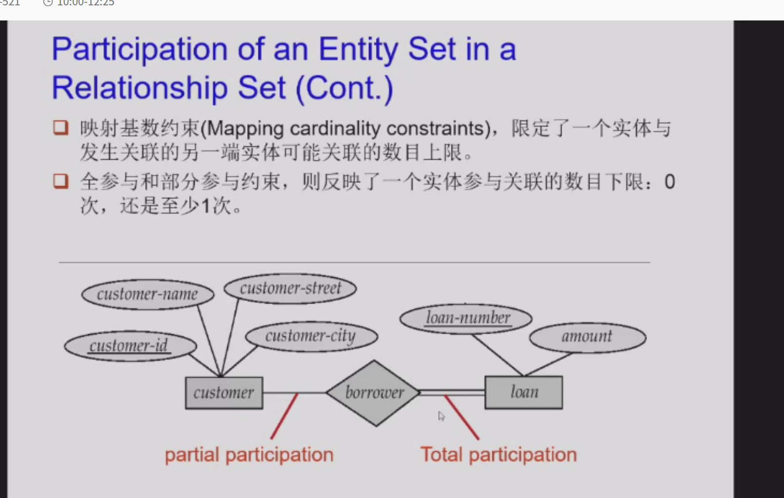
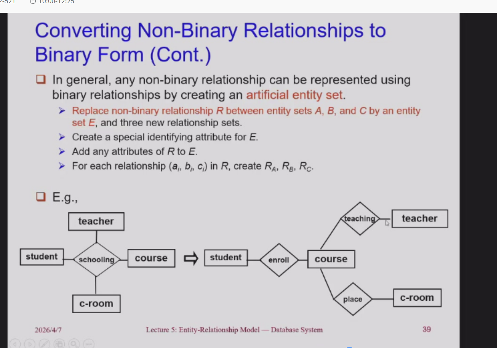
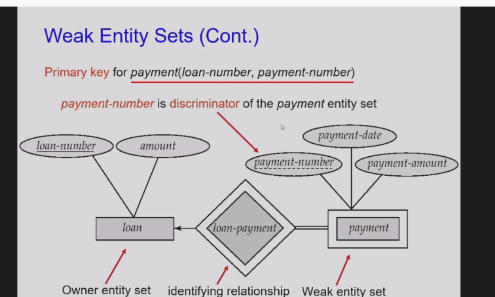
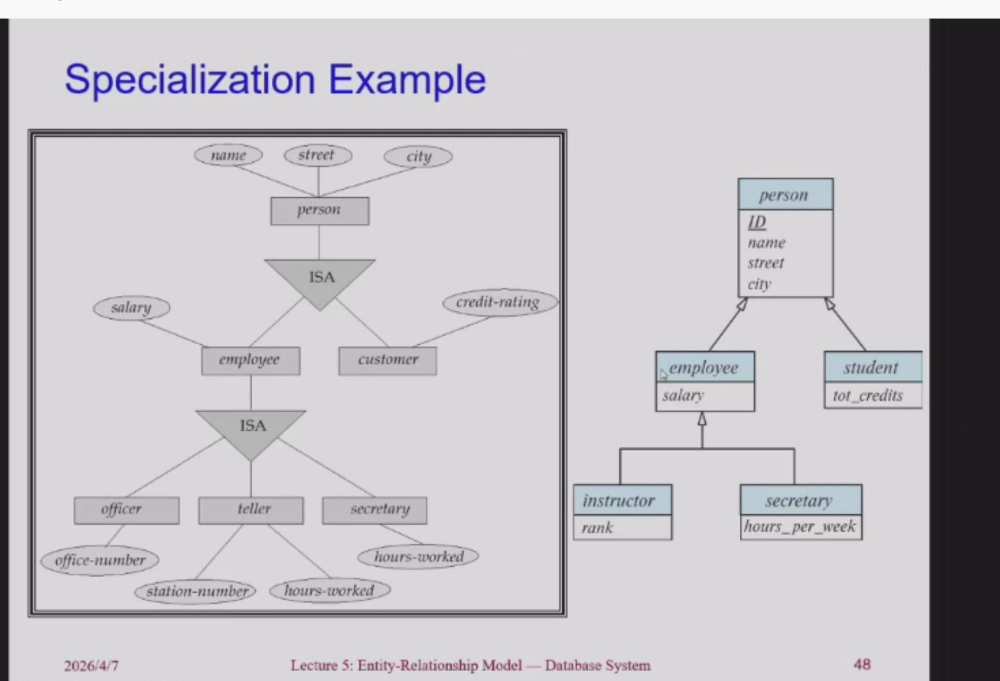
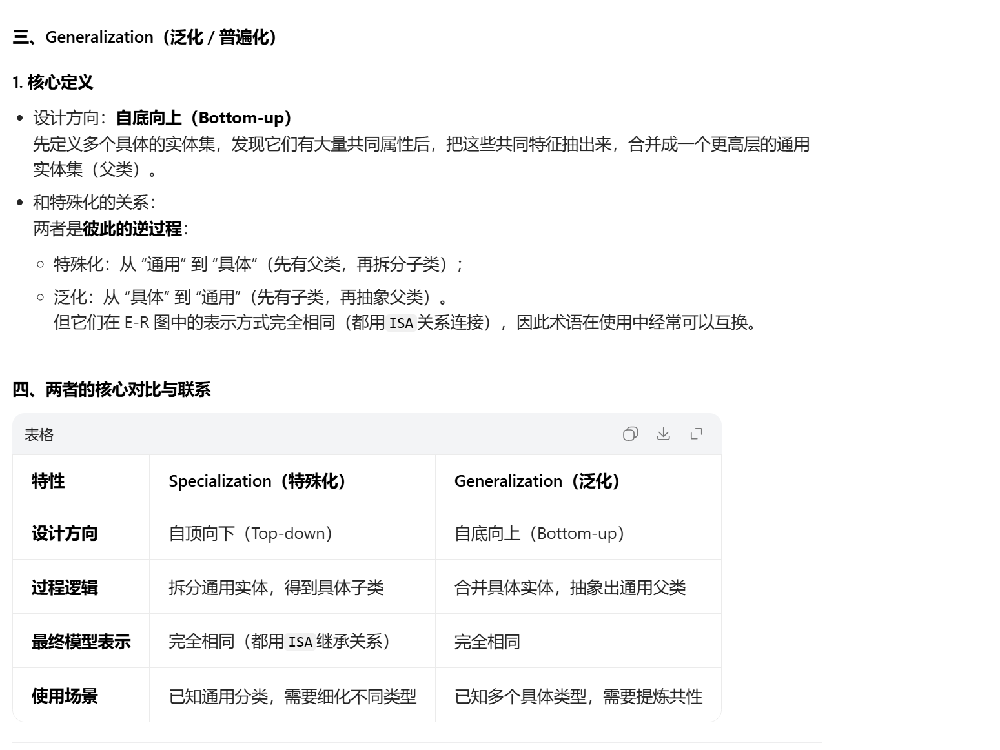
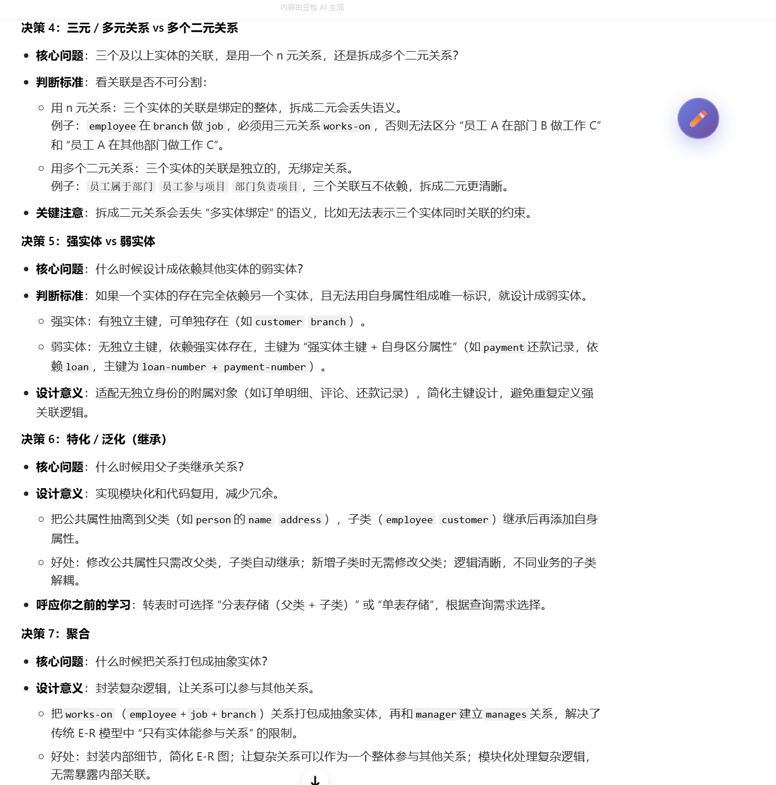

E-R 模型¶
基础概念¶
Entity Sets（实体集）¶
这张图是在定义“世界怎么被建模成数据”，核心概念如下：
- 核心建模逻辑：现实世界被抽象为 实体（Entity） 的集合，以及实体之间的 关系（Relationship）。
- 实体（Entity）：
- 定义：现实中存在且可区分的对象。
- 分类：可以是具体的（如具体的某棵树、某家公司），也可以是抽象的（如某次活动、某个账户）。
- 属性（Attributes）：
- 实体的描述性质。比如“学生”这个实体，拥有学号、姓名、年龄等属性。
- 实体集（Entity Set）：
- 定义：同一类型的所有实体的集合。
- 关键点：这些实体必须共享相同的属性。
- 例子：所有学生构成一个“学生实体集”，所有贷款构成一个“贷款实体集”。
Attributes（属性）¶
这张图是在细化实体的属性到底有哪些分类和规则，核心分为三层：
- 属性与域（Domain）
- 每个属性都有取值范围，这个范围叫域（Domain）。比如“性别”这个属性的域是 {男, 女}。
- 属性类型分类（重点）
- 简单 vs 复合：
- 简单属性：不可再分，如性别（sex）。
- 复合属性：可拆分，如姓名（name）可拆分为姓氏+名字。
- 单值 vs 多值：
- 单值：一个实体的一个属性只有一个值，如年龄。
- 多值：一个实体的某个属性可有多个值，如一个人的电话号码（phone-numbers）。
- 基属性 vs 派生属性：
- 基属性（存储属性）：直接存储在数据库里，如出生日期。
- 派生属性：不存储，由其他属性计算得出。如“年龄”，可以通过“当前时间 - 出生日期”算出来，所以叫派生属性。
- 简单 vs 复合：
总结¶
这两张PPT构建了数据库设计的最基本蓝图：先定义实体集（把同类事物归为一类），再定义属性（描述类的特征，并明确特征的类型与取值规则）。
关系概念¶
1. 核心定义：什么是关系（Relationship）？¶
- 通俗理解：它是两个或多个不同类实体之间的关联。
- 直观例子：
- 实体集
Customer（客户）和loan（贷款）之间，存在一个叫borrower（借贷）的关系。 - 具体的联系实例：
Jones（客户）与L-17（贷款号）建立了“借贷”关系；Smith与L-11建立了关系。
- 实体集
2. 联系集（Relationship Set）是什么？¶
- 定义：相同类型的所有联系（关系实例）的集合。
- 数学本质：从数学角度看，它是实体集之间的笛卡尔积的子集。
- 公式表达：${(e_1, e_2, ..., e_n) \mid e_1 \in E_1, e_2 \in E_2, ..., e_n \in E_n}$
- 翻译：每一个联系实例都是一个有序元组，元素分别来自不同的实体集。
- 举例：
borrower联系集包含了所有“客户-贷款”的关联元组，如(Jones, L-17)、(Smith, L-11)等。- 下方的学生课程例子：
(3032111020, 1, 95)是一个联系实例，整个大括号集合就是student_course联系集。
3. 关键逻辑（两张图的递进关系）¶
- 第一张图：定性描述。讲了联系是干嘛的（关联实体），什么是联系集（同类联系的集合）。
- 第二张图：定量/数学定义。明确了联系集在数据库中的逻辑存储结构，即它表现为实体主键的组合。
- 比如
borrower联系集在表中就体现为(customer-name, loan-number)的组合。 - 这也解释了为什么外键（Foreign Key）在数据库中如此重要——它是用来构建这种“联系”的物理实现。
- 比如
总结¶
这两张PPT在告诉我们：数据库不仅要有数据（实体），更要有关系。联系集就是把零散的实体（客户、贷款、学生、课程）串起来的逻辑网络，它是数据库中实现“关联查询”的理论基础。
这四张PPT讲的是 ER模型中联系集的两个核心性质，是数据库设计里用来描述和约束实体关系的关键规则，我们拆成两部分讲明白：
一、联系集的度（Degree of a Relationship Set）¶
这部分定义了“一个联系集里，到底有多少个实体集参与”。
1. 核心定义¶
联系集的度 = 参与这个联系集的实体集的数量。
2. 分类与例子¶
| 类型 | 度 | 说明 | 例子 |
|---|---|---|---|
| 二元联系（Binary） | 2 | 两个实体集参与，是最常见的类型 | 客户 ↔ 账户（depositor联系）、学生 ↔ 课程（选课联系） |
| 三元联系（Ternary） | 3 | 三个实体集参与，场景更复杂 | PPT里的银行例子：employee（员工）、job（工作）、branch（分支）比如“员工Johnson在支行A担任出纳，在支行B担任客户经理”，需要三个实体才能描述完整关系 |
| 更高元（n元） | ≥4 | 极少使用，因为逻辑太复杂，大部分场景都可以拆成多个二元联系 | 几乎不会在实际设计中用到 |
PPT里也强调了：三元及以上的联系非常少见，绝大多数业务场景都用二元联系就能解决。
二、映射基数（Mapping Cardinalities）¶
这部分定义了“在联系集中，一个实体最多能和另一个实体集里的多少个实体建立关系”，也就是我们常说的“1:1、1:n、n:m”。
1. 核心定义¶
映射基数描述的是实体之间的数量对应规则，主要用在二元联系上。PPT里的中文翻译很直白：
一个联系集中，一个实体可以与另一类实体相联系的实体数目（规定“最多一个”还是“多个”）。
注意：基数不要求每个实体都必须有对应关系（比如有些学生没选课、有些课程没人选都是允许的），它只规定“最多能有几个”。
2. 四种基础类型（结合图示+例子秒懂）¶
（1）1:1 一对一¶
- 规则：A里的每个实体，最多对应B里的1个实体；B里的每个实体，也最多对应A里的1个实体。
- 图示（第三张PPT图a）：
a1→b1、a3→b3、a4→b4，都是一一对应，a2和b2可以没有对应关系。 - 例子：国家 ↔ 现任总统。一个国家只能有1个现任总统，一个总统只能属于1个国家。
（2）1:n 一对多¶
- 规则：A里的1个实体，可以对应B里的多个实体；但B里的每个实体，只能对应A里的1个实体。
- 图示（第三张PPT图b）：
a1→b1、b2，a3→b4、b5，a2没有对应。 - 例子：班级 ↔ 学生。一个班级可以有多个学生，但一个学生只能属于1个班级。
（3）n:1 多对一¶
- 规则：和1:n反过来，A里的多个实体，可以对应B里的1个实体；但B里的每个实体，只能对应A里的1个实体。
- 图示（第四张PPT图a）：
a1、a2→b1，a3→b2，a4、a5→b3。 - 例子：学生 ↔ 班主任。多个学生属于同一个班主任，但一个班主任只能带1个班级。
（4）n:m 多对多¶
- 规则：A里的1个实体，可以对应B里的多个实体；B里的1个实体，也可以对应A里的多个实体。
- 图示（第四张PPT图b）：
a1→b1、b2，a2→b1，a3→b3、b4，a4→b3。 - 例子：学生 ↔ 课程。一个学生可以选多门课，一门课也可以有多个学生选。
三、这两个概念的实际作用¶
它们是数据库设计的“约束规则”，直接决定了你的表结构怎么建：
- 联系集的度：帮你判断联系的复杂度，优先用二元联系，三元联系要谨慎使用（比如员工-工作-分支的例子，很多时候可以拆成两个二元联系：员工-分支、分支-工作）。
- 映射基数：决定了外键和中间表的设计方式：
- 1:1：可以合并成一张表，或者在其中一张表里加外键（比如总统表里加国家ID）。
- 1:n：外键加在“多”的那边（比如学生表里加班级ID）。
- n:m：必须建中间表（也就是联系集的表，比如学生选课表，存学生ID和课程ID）。
举个你之前的图书馆例子：Borrow联系是二元联系（度为2），映射基数是n:m（一个学生可以借多本书，一本书可以被多个学生在不同时间借），所以我们建了中间表Borrow，存reader_id和book_id，这就是根据基数来设计的。
实体集的键（Keys for Entity Sets）¶
这部分定义了用来唯一标识实体的三类“键”，是所有数据库表的基础规则。
1. 超键（Super Key）¶
- 定义：一个或多个属性的集合，它的值能唯一确定实体集中的每一个实体。
- 通俗理解：只要能把“不同实体区分开”的属性组合，都是超键。
- 例子：
customer(cus-num, cus-name, cus-street, cus-city) {cus-num}是超键（每个客户编号唯一）{cus-num, cus-name}也是超键（因为cus-num已经唯一，加上name还是唯一）{cus-num, cus-street, cus-city}也是超键
2. 候选键（Candidate Key）¶
- 定义：最小的超键——也就是超键中，去掉任何一个属性，就不再是超键了（失去唯一性）。
- 通俗理解：“最精简”的超键，没有多余的属性。
- 例子：上面的customer表中，只有
cus-num是候选键，因为它是唯一的、不能再拆分的超键。 - 补充：一个实体集可以有多个候选键，比如学生表中，
学号和身份证号都能唯一确定学生，它们都是候选键。
3. 主键（Primary Key）¶
- 定义：从候选键中，人为选定的、作为实体的唯一主标识的键。
- 通俗理解：给实体集选一个“身份证号”，用来在整个数据库中唯一标识它。
- 例子：学生表中，我们通常选
学号作为主键，而不是身份证号（因为学号在学校系统里更稳定、常用）。
三者的关系：
超键 ⊇ 候选键 ⊇ 主键 所有候选键都是超键，但只有最小的超键才是候选键；主键是从候选键里选出来的一个。
联系集的键（Keys for Relationship Sets）¶
这部分讲的是联系集如何被唯一标识，规则和实体集不同，核心是“实体主键的组合”。
1. 基础规则：联系集的超键¶
- 定义：参与这个联系集的所有实体集的主键的组合，构成了联系集的超键。
- 例子：
borrower联系集（customer ↔ loan）：参与的实体主键是customer-id和loan-number，所以(customer-id, loan-number)是它的超键。enrolled选课联系集（student ↔ course）：(sid, cid)是超键。- 原理：联系集的每个元组，本质上就是实体之间的关联，所以用参与实体的主键组合，就能唯一标识这个关联。
2. 映射基数对候选键的影响（重点！）¶
PPT里提到，决定联系集的候选键时，必须考虑映射基数（1:1/1:n/m:n），不同的基数，候选键不一样：
| 映射基数 | 例子 | 候选键 | 原因 |
|---|---|---|---|
| 多对多（m:n） | 学生选课（student ↔ course） | (sid, cid) |
一个学生可以选多门课，一门课可以被多个学生选，必须两个主键组合才能唯一标识选课记录 |
| 一对多（1:n） | 班级-学生（class ↔ student） | sid（学生的主键） |
一个学生只能属于一个班级，所以学生的主键就能唯一确定“属于哪个班级”这个联系，不需要加上class-id |
| 一对一（1:1） | 国家-总统（country ↔ president） | country-id 或 president-id |
一个国家只有一个总统，一个总统只属于一个国家，双方的主键都能唯一确定联系，都是候选键，选一个作为主键即可 |
3. 主键的选择原则¶
- 如果有多个候选键（比如1:1的情况），要根据联系集的语义来选主键：
- 优先选非空、值稳定不变的属性（比如不要选会频繁变化的属性，避免主键更新）。
- 比如总统会换届，所以通常不会用
president-id作为主键，而是用country-id。
三、结合你之前的图书馆例子，串起来理解¶
比如你之前的图书馆系统：
- 实体集
Reader：主键是reader-id（候选键、超键）。 - 实体集
Book：主键是book-id（候选键、超键）。 - 联系集
Borrow： - 映射基数是
m:n（一个读者可以借多本书，一本书可以被多个读者借）。 - 如果没有
borrow-date属性，超键是(reader-id, book-id)，也是候选键，作为主键。 - 如果加上
borrow-date（同一个读者同一本书可以借多次），超键变成(reader-id, book-id, borrow-date)，这时候才是候选键，因为必须加上日期才能唯一标识每次借阅记录。
E-R图¶
这几张PPT是 E-R图（实体-关系图）的“标准画法与语义规则”，是数据库设计中可视化表达的核心。它们把你之前学的所有概念（实体、属性、关系、键、基数）都浓缩成了一套统一的图形语言。
我帮你把每张图的核心信息逐张拆解：
E-R Diagram（基础符号规则）¶
这张图是E-R图的“字典”，规定了每个图形代表什么。
- 矩形 (Rectangle) 👉 实体集 (Entity Set)
- 例：
customer(客户)、loan(贷款)。
- 例：
- 菱形 (Diamond) 👉 联系集 (Relationship Set)
- 例：
borrower(借贷关系)。
- 例：
- 椭圆 (Ellipse) 👉 属性 (Attribute)
- 例：
customer-id、amount。 - 下划线：表示主键 (Primary Key)。
- 例：
- 连接线 (Lines) 👉 连接属性到实体，实体到联系。
E-R Diagram With Attributes（属性类型的详细画法）¶
这张图把属性的分类用图标的形式展示得淋漓尽致：
- 复合属性 (Composite Attribute) —— 树状结构
- 例：
name(拆分为first-name,middle-initial,last-name)；address(拆分为street,city等)。 - 表示方法：一个大椭圆包含子椭圆。
- 例：
- 多值属性 (Multivalued Attribute) —— 双椭圆 (Double ellipse)
- 例：
phone-number。 - 表示方法：双线框椭圆。
- 例：
- 派生属性 (Derived Attribute) —— 虚线椭圆 (Dashed ellipse)
- 例：
age(由date-of-birth计算得出)。 - 表示方法：虚线椭圆。
- 例：
- 单值/基本属性 —— 单椭圆 (Solid ellipse)
- 例：
customer-id、date-of-birth。
- 例：
Relationship Sets with Attributes（带属性的联系集）¶
这张图补充了之前的疑问：联系集也可以有自己的属性。
- 核心规则：
- 菱形（联系）除了连接实体，也可以直接连属性椭圆。
- 例：
depositor(存款) 联系拥有属性access-date(访问日期)。
- 语义：
access-date既不属于客户，也不属于账户，它是“客户-账户”这次关联行为的属性。

Recursive Relationship（自环联系 / 递归关系）¶
这张图讲的是E-R图的高级语义，解决了“实体和自身发生关系”的问题。
- 自环联系 (Recursive Relationship Set)：
- 同一个实体集可以参与同一个联系集。
- 例：
employee(员工) 和works-for(隶属/管理关系)。
- 角色 (Role)：
- 为了区分同一个实体在联系中的不同身份，用 role labels (角色标签)。
- 例：
manager(管理者)：员工A 是 员工B 的上司。worker(下属)：员工B 受 员工A 管理。
- 作用：避免混淆，明确语义。
Express the Cardinality Constraints（基数约束的画法）¶
这里说的都是二元的联系。
这是最核心、最实用的规则！用来在图上表示“1:1、1:n、n:m”。
- 符号规则：
- 有向线 (Directed line, $\rightarrow$) 👉 表示 "One" (最多一个)。
- 无向线 (Undirected line, —) 👉 表示 "Many" (多个)。
- 读法口诀：
- 指向谁，谁就是“1”；不指向，就是“多”。
- 实战应用（结合之前的基数）：
- 1:1 (一对一)：A -> B，且 B -> A。
- 1:n (一对多)：A -> B，B — A。
- 解释：A 指向 B (1)，表示A的一个实体对应B的1个；B 不指向 A (多)，表示B的一个实体对应A的多个。
- n:m (多对多)：A — B，且 B — A。
- 解释：双方都是多，意味着A的一个实体对应B的多个，反之亦然。

总结（这几张PPT的逻辑闭环）¶
这几张图把E-R图从“基础定义”讲到了“高级语义”：
- 基础：先画实体、画关系、画属性（图1）。
- 细化：分清属性是复合的、多值的还是派生的（图2）。
- 扩展：关系自己也可以有属性（图3）。
- 进阶：同一个实体可以自己和自己玩（自环），需要用Role区分（图4）。
- 约束：最后用箭头/无箭头规则，严格规定实体之间的映射数量（图5）。
这张PPT讲的是 实体集在联系集中的“参与性约束”，也就是规定了“实体能不能独立存在，是否必须和其他实体建立关联”，是数据库设计里的核心业务约束之一。
我们把两个概念彻底拆透，结合例子和业务逻辑帮你理解：
核心概念：两种参与性¶
1. 全参与（Total Participation，强制参与）¶
- 定义：实体集中的每一个实体，都必须至少参与联系集中的一个关系，不存在“不关联的实体”。
- 符号：E-R图中用双线表示（实体集到联系集的连线是双线）。
- 业务逻辑：实体依赖联系存在，没有其他实体就无法独立存在。
- PPT例子：
loan（贷款）在borrower（借贷）联系中是全参与。 - 解释：业务上不存在“没有客户的贷款”，每一笔贷款都必须由某个客户申请，因此所有
loan实体都必须出现在borrower联系中，必须和customer关联。
2. 部分参与（Partial Participation，可选参与）¶
- 定义：实体集中的部分实体可以不参与联系集中的任何关系，存在“不关联的实体”。
- 符号：E-R图中用单线表示（实体集到联系集的连线是单线）。
- 业务逻辑：实体可以独立存在，不需要依赖联系。
- PPT例子：
customer（客户）在borrower联系中是部分参与。 - 解释：客户可以只是开户，从未申请过任何贷款，因此不是所有
customer实体都必须出现在borrower联系中，客户可以没有贷款记录。

参与性 vs 映射基数¶
很多人会混淆这两个概念，其实它们是完全不同的约束：
| 概念 | 核心问题 | 业务含义 |
| :--- | :--- | :--- |
| 映射基数（Cardinality） | 最多能关联几个？ | 规定“一个实体最多能和多少个其他实体建立联系”（比如1个客户最多能有5笔贷款）。 |
| 参与性（Participation） | 最少必须关联几个？ | 规定“一个实体最少必须和多少个其他实体建立联系”：
全参与=最少1个
部分参与=最少0个 |
举个例子：
- 班级和学生的联系中：
- 映射基数：1个班级最多有50个学生（1:n）。
- 参与性：每个学生最少必须属于1个班级（全参与），班级可以暂时没有学生（部分参与）。
业务落地：数据库里的实现¶
参与性约束最终会转化为数据库的字段约束：
- 全参与：对应的外键列必须设置为
NOT NULL（非空）。 - 比如
loan表的customer_id必须非空，因为每笔贷款必须有客户。 - 部分参与：实体集不需要依赖联系存在，因此对应的外键列可以为空，或者不需要设置外键。
- 比如
customer表不需要有loan_id字段，客户可以没有贷款记录。

一句话总结¶
- 全参与：实体“不能独活”，必须和其他实体绑定，E-R图用双线。
- 部分参与：实体“可以独活”，不一定需要关联，E-R图用单线。
这里要多去ppt看图
拆分非二元关系¶
这两张PPT讲的是 数据库设计中最关键的工程技巧：如何把复杂的非二元关系（三元、四元等）拆成简单的二元关系。
为什么要拆？（二元 vs 非二元）¶
1. 什么是二元/非二元？¶
- 二元关系 (Binary)：只涉及 2个 实体集。
- 例：
father(父亲, 孩子)。 - 非二元关系 (Non-Binary)：涉及 ≥3个 实体集。
- 例：
parents(父亲, 母亲, 孩子)（三元关系）。
2. 为什么要拆？（核心！）¶
PPT 给出了经典例子：亲子关系 (parents)。
- 如果不拆（三元关系）：
- 定义：
parents(he, she, child)。 - 限制：必须同时知道 父亲、母亲、孩子。
- 业务缺陷：如果只知道孩子和母亲，不知道父亲，这条记录就无法插入，因为父亲是“空”的。
- 拆成二元关系后：
- 定义：
father(父亲, 孩子)和mother(母亲, 孩子)。 - 优势：
- 灵活：可以只描述“父子”关系，也可以只描述“母子”关系。
- 支持缺失：孩子可能只有父亲没有母亲（或者反过来），数据库允许存在。
3. 结论¶
- 大部分“看似非二元”的关系，本质上是可以还原成二元关系的。
- 例外：天然的非二元关系（如
works-on(employee, branch, job)员工在分支做某工作），这种关系描述的是一种“三位一体”的状态，很难单纯拆成两个二元关系，通常保留原结构或拆成实体。
怎么拆？（通用转化法则）¶
这是这组PPT最硬核的通用算法，不管是3个实体还是100个实体，规则通用。
核心思想：¶
把“关系”变成“实体”（实体化 / Entityification）。
- 原来的非二元关系 $R$，变成一个新的 人工实体 (Artificial Entity Set, E)。
- 原来的实体 $A, B, C$ 变成新实体 $E$ 的附属关系。
具体步骤（算法）：¶
假设有一个三元关系 $R$ 连接实体 $A, B, C$。 要把它拆成二元关系，做 4步：
- 造新实体 (E)：
- 把关系 $R$ 本身变成一张表（实体 $E$）。
- 加标识 (ID)：
- 给新实体 $E$ 加一个主键属性（比如 $E_id$）。
- 移属性：
- 把原来属于关系 $R$ 的所有属性，都移到新实体 $E$ 上。
- 建关系：
- 分别建立 $R_A$ ($A$ 联系 $E$)、$R_B$ ($B$ 联系 $E$)、$R_C$ ($C$ 联系 $E$)。
看图理解（第三张PPT）：¶
左边是原始图：$A$、$B$、$C$ 直接连菱形 $R$。 右边是转换后：
- 中间多了一个红色方块 E（新实体）。
- $A$ -> $E$ (关系 $R_A$)。
- $B$ -> $E$ (关系 $R_B$)。
- $C$ -> $E$ (关系 $R_C$)。
最终效果（落地到数据库）：
| 原始结构 (非二元) | 转换后结构 (二元/实体化) |
| :--- | :--- |
| 表 R (包含 A_id, B_id, C_id, R属性) | 表 E (新实体，含 E_id, A_id, B_id, C_id, R属性)
表 A (原实体)
表 B (原实体)
表 C (原实体) |
三、用具体例子让你秒懂¶
假设银行有个三元关系 supplies(employee, branch, part) —— 员工在分支提供零件。
按规则转化：
- 关系变实体：把
supplies变成一个新实体Supply_Record（供货记录）。 - 加ID：
record_id。 - 移属性：如果有“供货数量”、“供货日期”，这些属性移到
Supply_Record。 - 建二元关系：
employee1 -- nSupply_Record（一个员工可以提供多次记录）。branch1 -- nSupply_Record（一个分支有多个供货记录）。part1 -- nSupply_Record（一个零件出现在多个记录里）。
转化后的 SQL 表结构：
-- 原实体 (不变)
TABLE employee (id, name);
TABLE branch (id, name);
TABLE part (id, name);
-- 新实体 (原来的关系变成了表)
TABLE Supply_Record (
record_id PK,
employee_id FK, -- 对应原来的employee
branch_id FK, -- 对应原来的branch
part_id FK, -- 对应原来的part
supply_date, -- 原来关系的属性
quantity -- 原来关系的属性
);
四、一句话总结¶
这两张PPT在教你：
- 看语义：如果关系里的实体能独立分开描述（如父子、母子），就拆成二元关系，这样数据库更灵活。
- 万能方法：如果必须保留，就把关系拆出来做成一张独立的中间表（实体化），让所有实体都和这张表建立二元关系（1:n）。
弱实体集¶
一、第一张图：什么是弱实体集？¶
1. 核心定义¶
没有主键 (Primary Key) 的实体集，称为弱实体集。
2. 你的例子：payment (还款记录)¶
- 业务场景：一笔贷款（
loan）可以有多次还款记录。 - 编号问题：
pay-num（还款编号）是按“每笔贷款”单独从 1 开始编的（比如贷款 L-101 的第 1 次还款，贷款 L-102 的第 1 次还款）。 - 致命缺陷：
pay-num不能全局唯一。- 单独看
payment表，(L-101, 1)和(L-102, 1)这两条记录，主键是不唯一的。
- 结论：
payment自己没有全局主键，无法独立存在，它必须依赖“具体的某笔贷款”才能唯一标识自己。- 所以，
payment是 弱实体集。 pay-num叫 分辨符 (Discriminator) 或 部分码 (Partial Key) —— 它只能在“同一个贷款”内部区分不同还款记录，不能全局区分。
二、第二张图：三大硬性特征（必须记住）¶
弱实体集必须满足三个条件，否则就不是弱实体：
1. 依赖存在 (Dependent Existence)¶
- 定义：弱实体的存在依赖于属主实体（Identifying Entity）。
- 例子：没有
loan，就没有payment。还款记录必须挂在某笔贷款下。 - 符号：E-R 图中，弱实体用 双矩形 表示（第一张图里的 red box）。
2. 一对多联系 (Total, One-to-Many)¶
- 定义：弱实体必须通过一个 全参与 (Total) 的 一对多 (1:N) 关系连接到属主实体。
- 解释：
- 一个
loan(强实体) 可以有多个payment(弱实体)。 - 每一个
payment必须属于且仅属于一个loan。
- 一个
- 关系：这个连接两者的关系叫 标识性联系 (Identifying Relationship)。
3. 标识性联系 (Identifying Relationship)¶
- 定义：连接强实体与弱实体的那条关系线。
- 符号：E-R 图中用 双菱形 表示（第一张图里的? 应该是双菱形）。
三、第三张图：主键怎么定？（核心难点）¶
弱实体虽然没有自己的独立主键，但它在数据库里必须有主键，怎么生成？
1. 规则：主键 = 属主主键 + 分辨符¶
Weak Entity PK = PK of Strong Entity + Discriminator
2. 结合你的例子¶
- 属主实体 (
loan) 的主键：loan-number(L-101)。 - 弱实体 (
payment) 的分辨符：pay-num(1, 2, 3...)。 payment的最终主键：(loan-number, pay-num)。- 例如：
(L-101, 1)、(L-101, 2)、(L-102, 1)。 - 这样组合起来，全局唯一！
- 例如：
3. 分辨符 (Discriminator) 的作用¶
它就是弱实体里那个“不够独立”的属性（比如 pay-num），它只能区分“同一个父亲”下的孩子，不能区分“全世界”的孩子。
四、第四张图：落地与注意事项（为什么不存 Loan-number？）¶
这是最容易犯错的地方，PPT 讲的是存储冗余问题。
1. 不要显式存储属主主键¶
- 理论上：
payment表不需要存loan-number，因为通过“标识性联系”，我们知道payment一定属于哪个loan。 - 物理实现：
- 在 ER 图里不画出来。
- 在数据库表设计中，逻辑上通过外键关联，物理上不需要冗余存储属主主键（或者说通过联系隐含）。
2. 为什么不直接存 loan-number 让它变强实体？¶
PPT 给了一个非常棒的理由：数据冗余与逻辑重复。
- 如果强行存：
- 给
payment加loan-number字段。 - 这样
payment就有了自己的主键（比如pay-id或loan-number+pay-num），它就变成强实体了。
- 给
- 后果：
- 数据重复。
- 我们有两条“关系”：
- 显式关系：通过
payment.loan-number指向loan。 - 隐式关系：通过“标识性联系”建立的父子依赖。
- 显式关系：通过
- 这会导致数据不一致的风险（更新异常）。
3. 总结¶
弱实体的精髓在于： 我不存你的主键，我只用一条线（标识性联系）把你“挂”在我身上，我的主键由你的主键加上我的分辨符共同组成，这样数据结构最干净，没有冗余。
五、一句话总结¶
这几张PPT在教你： 当一个实体“自己没有全局主键”，且“必须依附于另一个实体才能存在”时，它就是弱实体。
- 表现：双矩形（弱实体） + 双菱形（标识关系）。
- 主键：父表主键 + 自身编号。
- 目的：保持数据干净，避免冗余。

具象化/泛化¶
这几张PPT讲的是 扩展ER模型（Extended E-R features）里的「特化（Specialization，也叫具体化/继承）」，是ER模型用来描述实体之间“是一个（IS-A）”层级关系的特性，和面向对象编程里的“继承”概念几乎是一一对应的。
一、核心定义：什么是特化（Specialization）？¶
特化是一种自顶向下的设计方法，用来处理实体的分层结构：
- 过程：从一个通用的「高层实体集」，分出有区别的「低层实体集（子类）」。
-
关键特性：属性继承（Attribute Inheritance） 所有低层实体集，会自动继承父类的全部属性，以及父类参与的所有关系，同时可以拥有自己独有的属性或参与不同的关系。
-
本质：描述「IS-A（是一个）」的关系，比如“员工是一个人”“客户是一个人”。
二、用例子拆解：Person的分层结构¶
PPT里的Person例子，完美演示了特化的用法：
1. 第一层：通用父类 Person（人）¶
- 作为最高层的通用实体，拥有所有“人”共有的属性：
name（姓名）、street（街道）、city（城市）。 - 它不区分你是员工还是客户，只描述“人”的通用特征。
2. 第一次特化：分出子类 Employee 和 Customer¶
Employee（员工）：- 继承了
Person的所有属性（name/street/city）。 - 新增了自己独有的属性：
salary（工资）。 Customer（客户）：- 继承了
Person的所有属性。 - 新增了自己独有的属性：
credit-rating（信用评级）。 - 关系：
Employee IS-A Person，Customer IS-A Person（员工/客户都是人）。
3. 第二次特化：对Employee再细分¶
Employee作为父类，又分出了Officer（主管）、Teller（柜员）、Secretary（秘书）三个子类：Officer：继承了Employee（以及Person）的所有属性，新增office-number（办公室号）。Teller：新增station-number（工位号）。Secretary：新增hours-worked（工作时长）。- 右边的UML类图，也对应了这个层级结构：
Person→Employee→Instructor/Secretary，每个子类都继承父类，同时加自己的属性。
三、为什么要用特化？解决了什么问题？¶
如果不用特化，直接把所有属性都放到Person里，会出现两个问题：
-
数据冗余与空值泛滥： 客户没有
salary，员工没有credit-rating，如果都放Person里，会有大量字段为空，既不规范也浪费空间。 -
逻辑不清晰：无法区分“员工”和“客户”的不同特征，业务逻辑混在一起。
特化完美解决了这些问题：
- 通用属性放父类，避免重复定义。
- 特殊属性放子类，每个实体只需要自己的属性，没有冗余空值。
- 层级清晰，业务含义一目了然。
四、关键补充：特化 vs 泛化（Generalization）¶
你可能会在教材里看到“泛化”这个词，它和特化是同一个概念的正反两面：
- 特化（Specialization）：自顶向下，从通用到特殊（比如先有
Person，再分Employee/Customer）。 - 泛化（Generalization）：自底向上，从特殊到通用（比如先有
Employee/Customer，再抽象出共同的父类Person）。 两者最终的模型结构是一样的，只是设计思路不同。


具象化/泛化约束¶
这两页PPT是数据库扩展实体-关系模型（EER）中，针对特化/泛化（Specialization/Generalization）关系的三大核心设计约束，用来明确父类实体和子类实体之间的成员规则，避免数据模型出现逻辑歧义或漏洞。
我帮你分模块拆解清楚，结合PPT里的例子和图示：
一、先搞懂背景：这些约束管什么？¶
在EER模型里，我们用ISA（is-a）关系表示“子类继承父类”（比如储蓄账户ISA账户、员工ISA人），但只画ISA关系还不够严谨——我们需要明确：
- 父类实体怎么划分到子类里？
- 一个实体能不能同时属于多个子类？
- 父类的所有实体都必须属于某个子类吗？
这些问题，就是这几类约束要解决的。
二、第一类：成员定义约束（实体如何被分配到子类）¶
规定了“父类实体如何被划分到子类中”，分为两种方式：
- 条件定义（Condition-defined）
- 规则：子类的成员资格由一个明确的条件自动决定，只要满足条件，就自动属于这个子类。
- PPT例子：
- “所有65岁以上的客户，自动属于老年公民子类”；
- “账户类型为‘储蓄账户’的，自动属于
Saving-account子类”。 - 特点：规则客观、可自动执行，数据满足条件就会被自动归类。
- 用户自定义（User-defined）
- 规则：子类的成员资格不由固定条件决定，而是由用户手动指定。
- PPT例子：“员工被分配到不同的团队（teams）”，不是由员工的某个属性（比如职位、部门）自动决定，而是人工分配的。
- 特点：规则更灵活，但需要人工维护，无法自动判断。
三、第二类：不交/重叠约束（一个实体能不能属于多个子类）¶
这是最核心的约束之一，规定了父类实体和子类的成员关系是否互斥：
- 不交（Disjoint，互斥）
- 规则：一个父类实体，最多只能属于一个子类，不能同时属于多个子类。
- PPT例子：
account（账户）分为Saving-account（储蓄账户）和checking-account（支票账户），一个账户要么是储蓄账户，要么是支票账户，不能同时是两者。 - 图示标记：E-R图里会在
ISA三角形旁边标上disjoint（或Disj）来表示。
- 重叠（Overlapping，可交叉）
- 规则：一个父类实体，可以同时属于多个子类。
- PPT例子：
person（人）分为customer（客户）和employee（员工），一个人可以既是公司的员工，又是公司的客户（比如员工自己开了账户），所以可以同时属于两个子类。
四、第三类：完全性约束（父类实体是不是必须属于某个子类）¶
规定了父类的实体，是否必须被划分到至少一个子类中：
- 完全泛化（Total Completeness）
- 规则：父类的每一个实体，都必须属于某个子类，没有“游离在所有子类之外”的父类实体。
- PPT例子：
account（账户）分为储蓄账户和支票账户，所有账户都必须是其中一种，不存在既不是储蓄也不是支票的账户。 - 图示标记：E-R图里会在
ISA三角形的上方画双横线来表示（PPT里的图例标了双横线）。
- 部分泛化（Partial Completeness）
- 规则：父类的实体，可以不属于任何子类，允许存在“通用的父类实体”。
- PPT例子：
person（人）分为客户和员工，但一个人可以既不是客户，也不是员工（比如只是路过的访客），所以不需要属于任何子类。 - 图示标记：
ISA三角形上方是单横线（默认，不用特殊标记）。
五、组合约束：PPT里的两个典型例子¶
PPT里的两个图示，其实是两种最常见的约束组合：
| 例子 | 约束组合 | 业务逻辑 |
|------|----------|----------|
| account | 不交 + 完全 | 一个账户不能同时是储蓄/支票账户，且所有账户都必须属于其中一种 |
| person | 重叠 + 部分 | 一个人可以同时是客户+员工，也可以既不是客户也不是员工 |
六、为什么要这些约束？¶
这些约束不是形式主义，而是为了：
- 保证数据一致性：比如不交约束避免了“一个账户同时是两种类型”的逻辑矛盾；
- 明确业务规则：比如完全性约束规定了“所有账户都必须有类型”，符合银行的业务逻辑；
- 减少歧义：让后续设计数据库表、写SQL的时候，不用再纠结“一个实体能不能属于多个子类”这种问题。
这几页PPT在讲 扩展E-R模型（EER）中的「聚合（Aggregation）」，它是一种解决“关系与关系之间无法直接建立联系”的抽象机制，我们结合例子一步步拆解清楚：
七、聚合（Aggregation）¶
一、先搞懂背景：传统E-R模型的局限¶
在基础E-R模型里，只有实体（Entity，比如员工、部门）才能和关系（Relationship，菱形表示）连接，而关系本身不能作为另一个关系的参与者。但现实业务中，我们经常需要给“关系”再建立新的关系，比如例子里的场景：
- 员工在部门做工作（
works-on关系），现在要给这个“员工+部门+工作”的组合，再关联一个负责的经理（manages关系） - 直接给
manages关系重复连接实体，会导致数据冗余、逻辑混乱，所以需要聚合来解决这个问题。
二、例子中的业务场景 & 原来的设计问题¶
1. 基础业务（无聚合的设计）¶
- 实体：
employee（员工）、job（工作）、branch（部门/分支） - 三元关系
works-on：表示「某个员工在某个部门负责某个工作」（比如“张三在技术部负责开发任务”）
2. 新增需求：给任务关联经理¶
我们需要记录：“这个由员工在部门负责的工作，由哪个经理管理”，也就是给works-on这个关系实例，再关联一个manager。
3. 原来的错误设计（第一张PPT的图）¶
直接加了一个新的三元关系manages，连接employee、branch、manager，这就出现了严重问题：
- 信息重叠 & 冗余：
works-on和manages都用到了employee和branch，重复存储了相同的员工-部门关联 - 逻辑不清晰：
manages没有和job关联，无法区分“同一个员工在同一个部门的不同工作”对应的不同经理（比如张三在技术部同时负责开发和测试，两个任务的经理可能不同，但原来的设计无法体现） - 无法删除基础关系：不是所有
works-on的任务都有经理（比如临时任务没人管），所以必须保留works-on，导致两个关系都要维护，冗余严重
三、聚合的核心思想：把关系当作“抽象实体”¶
聚合（Aggregation）的本质，就是将一个关系（或多个实体的组合）视为一个「抽象实体」，让这个“抽象实体”可以像普通实体一样，参与到其他关系中。
聚合的解决方案（第三张PPT的图）¶
- 打包基础关系：用一个方框，把
works-on关系和它连接的employee、job、branch整体“打包”，形成一个复合实体集（PPT里标了“复合实体集”） - 建立新关系：让这个“打包后的抽象实体”，和
manager建立新的二元关系manages
这样设计的优势：¶
- 逻辑清晰：
manages直接关联到「员工+部门+工作」这个组合，明确对应每个具体任务的经理，不会混淆 - 消除冗余：不需要重复连接
employee和branch，只需要和聚合后的整体关联，复用了works-on的逻辑 - 灵活兼容：
works-on依然存在，处理没有经理的任务；manages只处理有经理的任务，两者各司其职，没有冗余
四、聚合的关键特点 & 表示方法¶
- 核心本质：关系也是一种“实体”，可以参与其他关系，打破了基础E-R模型中“只有实体能参与关系”的限制
- E-R图表示：用方框把要聚合的关系和它的实体包起来，作为一个整体，再和新的关系连接（就像第三张PPT里的方框）
- 和其他抽象的区别：聚合和特化/泛化不同，特化是“实体之间的继承”，而聚合是“把关系抽象成实体”，解决关系与关系的连接问题
五、生活化的例子帮你理解¶
假设我们要建模“学生选课”和“监考老师”：
- 基础关系：
student（学生）+course（课程）的selects关系（表示学生选了某门课） - 新增需求：记录“这个学生选的这门课，由哪个老师监考”
- 用聚合解决：把
selects关系（学生+课程）打包成一个抽象实体，再和teacher建立invigilates关系，这样就不用重复连接学生和课程了，逻辑清晰且无冗余
总结¶
ppt有之前的表示总结 自己看
如何建ER图¶
这组PPT是 E-R 模型设计的三大核心决策（Design Decisions），也就是在画 E-R 图时，面对同一个现实对象，到底该翻译成“属性”“实体”还是“关系”。
这是 E-R 设计中最容易踩坑的地方，我按顺序把三个决策都讲透：
决策 (1)：属性 vs 实体集（Attribute vs Entity Set）¶
核心问题：¶
一个东西，到底是作为“实体的一个字段（属性）”，还是作为一个独立的“实体表”？
❌ 错误设计（方案1）¶
把 phone 直接当成 employee 的一个属性。
- 优点：简单。
- 致命缺点：
- 一个员工有多个电话怎么办？（无法存储）
- 电话还有其他属性（比如
location办公电话、type家庭电话）呢？（无法存储）
✅ 正确设计（方案2）¶
把 phone 做成独立实体集，employee 和 phone 之间建立关系。
employee(emp-id, emp-name, ...);
phone(phone-num, location, type, color);
emp-phone(emp-id, phone-num); -- 关系表
✅ 判断标准（PPT结论）¶
- 当属性：如果这个对象只有一个值，且不需要描述它的其他信息（比如性别、年龄）。
- 当实体：如果这个对象有多个值，或者自身还有额外属性需要描述（比如电话、地址、部门）。
⚠️ 铁律¶
一个对象不能同时既是属性又是实体。
（比如不能既在 employee 表里存 phone，又单独建 phone 表，会导致数据冗余和不一致）。
决策 (2)：实体集 vs 关系集（Entity vs Relationship）¶
核心问题：¶
一个“事件/动作”，是直接当成“关系”，还是当成“实体”？
例子分析：loan（贷款）¶
方案 A：把 loan 当成关系（Action）¶
customer 和 branch 之间直接用 loan 关系连接。
- 语义：这只是一个动作（客户在分行办了贷款）。
- 适用：如果
loan没有独立的生命周期，不需要关联其他东西。
方案 B：把 loan 当成实体集（Object）¶
拆成两步：
customer--borrow-->loan（客户借贷款）loan--loan-bra-->branch（贷款属于分行）- 语义：贷款本身是一个独立的对象（有编号、金额、状态），它可以被关联（比如关联担保人、还款记录）。
- 适用：当这个“动作”本身有属性，或者会被其他实体关联时，必须变成实体。
结论¶
- 关系：描述实体之间的动作。
- 实体：描述具有独立语义的对象（如贷款、订单、课程）。
决策 (3)：实体的属性 vs 关系的属性（Attribute vs Relationship）¶
核心问题：¶
两个实体之间的关联信息，该存在谁的表里？
❌ 错误设计（方案1）¶
把导师信息直接塞到学生表里。
- 问题：
- 冗余：同一个导师带多个学生，他的
name和position会重复存很多次。 - 语义不对：导师的职位是“导师”这个对象的属性，不是“学生”的属性。
- 冗余：同一个导师带多个学生，他的
✅ 正确设计（方案2）¶
把 supervisor 做成实体，关系 stu-sup 只存关联时间。
student(sid, name, sex, age, ...);
supervisor(sup-id, name, position, ...);
class(classno, ...);
stu-class(sid, classno); -- 学生班级关系
stu-sup(sid, sup-id, from, to); -- 学生导师关系(带属性)
核心逻辑¶
- 谁的东西归谁：
- 导师的姓名、职位 → 属于
supervisor实体（作为实体属性）。 - 学生和导师的起止时间 → 属于
stu-sup关系（作为关系属性）。
- 导师的姓名、职位 → 属于
- 消除冗余：把关联信息从实体属性中抽出来，做成关系表，避免数据重复。
一句话总结这三个决策¶
E-R 设计的本质，就是为了消除数据冗余、保证语义独立：
- 属性 vs 实体：多值、有属性、要关联 → 当实体；单值、简单 → 当属性。
- 实体 vs 关系：本身是个动作 → 当关系；本身是个独立对象 → 当实体。
- 实体属性 vs 关系属性：属于对方的固有特征 → 当实体属性；属于两者关联的状态 → 当关系属性。

E-R变成表¶
这几页PPT讲的是 E-R模型到关系数据库表的转换（Reduction），也就是把我们画好的E-R图，翻译成实际可建表的SQL schema。我帮你按类型拆解，结合例子讲清楚每一步怎么转：
基本规则（强实体集（Strong Entity Set）¶
一、核心前提：E-R转表的基本原则¶
这是整个转换过程的总纲领：
- E-R图是蓝图，表是实现：把E-R模型转成表，是设计关系数据库的基础步骤。
- 一一对应：每个实体集、每个关系集，都会被转换成一张独立的表，表名和实体/关系名保持一致。
二、强实体集（Strong Entity）的转换¶
这是最基础、最简单的转换：
- 规则：直接把强实体集，转换成一张同名表，实体的每个属性，都变成表的列；实体的主键，就是表的主键。
- 例子：
-- customer实体 → customer表
CREATE TABLE customer (
customer_id INT PRIMARY KEY, -- 下划线标注的是主键
cust_name VARCHAR(50),
cust_street VARCHAR(100),
cust_city VARCHAR(50)
);
-- employee实体 → employee表
CREATE TABLE employee (
employee_id INT PRIMARY KEY,
employee_name VARCHAR(50),
phone VARCHAR(20),
start_date DATE
);
- 注意：只有强实体可以这么直接转，弱实体、带特殊属性的实体，都需要额外处理。
三、带复合属性（Composite Attribute）的实体转换¶
复合属性（比如name包含first-name和last-name）不能直接作为列存在，需要“扁平化”处理：
- 规则：把复合属性拆成它的子属性，作为独立的列存在。
- 例子：
E-R图里的
customer实体，有一个复合属性name(first-name, last-name)。 转换后：
CREATE TABLE customer (
customer_id INT PRIMARY KEY,
first_name VARCHAR(50), -- 复合属性的子属性
last_name VARCHAR(50), -- 直接拆成两列
cust_street VARCHAR(100),
cust_city VARCHAR(50)
);
- 也可以写成
name.first_name的形式，但实际建表时，直接拆成独立列更通用。
四、带多值属性（Multivalued Attribute）的实体转换¶
多值属性（比如一个员工有多个家属姓名）不能直接存在表里，会导致数据冗余，需要单独建表处理：
- 规则：
- 主实体保留除多值属性外的其他列；
- 为多值属性单独建一张关联表，列是
(主实体主键, 多值属性值)； - 主实体和关联表通过主键关联。
- 例子：
E-R图里的
employee实体，带多值属性dependent-names（家属姓名）。 错误写法（会导致字段重复/无法存储多个值）：
CREATE TABLE employee (
emp_id INT PRIMARY KEY,
ename VARCHAR(50),
dependent_names VARCHAR(100) -- 无法存储多个家属姓名
);
正确转换写法：
-- 1. 主实体表，去掉多值属性
CREATE TABLE employee (
emp_id INT PRIMARY KEY,
ename VARCHAR(50),
sex CHAR(1),
age INT
);
-- 2. 多值属性关联表，每一行对应一个家属
CREATE TABLE employee_dependent_names (
emp_id INT,
dependent_name VARCHAR(50),
PRIMARY KEY (emp_id, dependent_name),
FOREIGN KEY (emp_id) REFERENCES employee(emp_id)
);
比如员工John有两个家属Johnson和Johndoter，关联表里会有两行：
| emp_id | dependent_name |
|--------|----------------|
| John | Johnson |
| John | Johndoter |
五、总结：不同实体的转换规则速查表¶
| 实体类型 | 转换方式 | 核心操作 |
|---|---|---|
| 普通强实体 | 直接转表 | 属性→列，主键→表主键 |
| 带复合属性的实体 | 扁平化 | 复合属性拆成子属性列 |
| 带多值属性的实体 | 拆分主表+关联表 | 多值属性单独建表，用外键关联 |
这几页PPT是E-R模型转表的进阶部分，覆盖了弱实体、不同基数的关系集，以及如何通过合并减少表的冗余。我按模块拆解，把规则、例子和坑点讲清楚：
弱实体集（Weak Entity）的转表规则¶
核心规则¶
弱实体本身没有独立主键，转表时必须包含其标识强实体的主键，再加上自身的区分属性，组成联合主键。
例子：payment（还款记录）弱实体¶
- 依赖的强实体：
loan（贷款），主键是loan-number - 弱实体自身的区分属性：
payment-number（还款编号） - 转表结果：
CREATE TABLE payment (
loan_number VARCHAR(10), -- 标识强实体的主键
payment_number INT, -- 弱实体的区分属性
payment_date DATE,
payment_amount DECIMAL(10,2),
PRIMARY KEY (loan_number, payment_number), -- 联合主键
FOREIGN KEY (loan_number) REFERENCES loan(loan_number)
);
- 对应数据：同一笔贷款
L-17有3笔还款，靠payment-number区分，联合主键保证了每笔还款的唯一性。
关系集（Relationship）的转表规则（按基数分）¶
1. 多对多（M:N）关系¶
- 规则：单独建一张关系表，包含两个参与实体的主键（作为外键），关系自身的属性也放这张表里；两个实体的主键组成关系表的联合主键。
- 例子：
borrower（客户-贷款关系）
CREATE TABLE borrower (
customer_id VARCHAR(20), -- 客户实体的主键
loan_number VARCHAR(10), -- 贷款实体的主键
PRIMARY KEY (customer_id, loan_number),
FOREIGN KEY (customer_id) REFERENCES customer(customer_id),
FOREIGN KEY (loan_number) REFERENCES loan(loan_number)
);
2. 多对一（N:1）关系¶
- 规则：关系表的主键，就是“多”端实体的主键；“1”端的主键作为外键。
- 例子：
loan-branch（贷款-分行关系）
CREATE TABLE loan_branch (
loan_number VARCHAR(10), -- 多端（贷款）的主键，作为本表主键
branch_name VARCHAR(50), -- 一端（分行）的主键，作为外键
PRIMARY KEY (loan_number),
FOREIGN KEY (branch_name) REFERENCES branch(branch_name)
);
3. 一对一（1:1）关系¶
- 规则：和多对一类似，可任选一端作为“多”端处理；也可以合并到任意一方的实体表中。
表的冗余优化：合并关系表与实体表¶
核心思想¶
对于多对一/一对多关系，且多端实体是完全参与（Total Participation）的情况，可以把关系表直接合并到“多”端的实体表中，减少表的数量。
例子：account-branch（账户-分行关系）¶
- 原始设计：两张表
- 合并优化后：一张表，把
branch_name直接加到account表中
- 适用前提：账户必须属于一个分行（完全参与），没有账户可以不关联分行，所以合并后不会出现
NULL值。
合并的坑：部分参与时的问题¶
如果多端实体是部分参与（Partial Participation），合并会导致大量NULL值，不推荐合并。
例子：cust-banker（客户-理财经理关系）¶
- 场景：不是所有客户都有专属理财经理
- 原始设计：两张表，无
NULL
- 错误合并：把
banker_id加到customer表中
结果：没有理财经理的客户，banker_id和type会是NULL，浪费空间且不符合范式。
最终优化示例（PPT里的合并对比）¶
| 原始设计（两张表） | 合并优化后（一张表） | 适用条件 |
|---|---|---|
account(account_number, balance) + account_branch(account_number, branch_name) |
account(account_number, balance, branch_name) |
账户必须属于一个分行（完全参与） |
loan(loan_number, amount) + loan_branch(loan_number, branch_name) |
loan(loan_number, amount, branch_name) |
贷款必须属于一个分行（完全参与） |
customer(customer_id, ...) + cust_banker(customer_id, employee_id) |
不推荐合并（会产生NULL） | 不是所有客户都有理财经理（部分参与） |
employee(employee_id, ...) + works_for(employee_id, manager) |
employee(employee_id, ..., manager) |
所有员工都有上级（完全参与） |
总结：转表优化的决策逻辑¶
- 弱实体必须单独建表，用“强实体主键+自身区分属性”做联合主键。
- 多对多关系必须单独建表，不能合并。
- 多对一/一对多关系：
- 多端完全参与：推荐合并到多端实体表，减少表数量。
- 多端部分参与：不合并，保留单独的关系表，避免
NULL值。
这两页PPT分别讲了 两个非常重要的转表规则：
- 弱实体的标识关系（Identifying Relationship）：为什么对应的关系表通常是冗余（Redundant）的，不需要单独存在。
- 特殊化/泛化（Specialization/Generalization）的转表方法：面对继承关系，有两种主流的建表方案，以及它们各自的优缺点。
补充¶
一、第一部分：弱实体与标识关系（Redundancy of Tables）¶
1. 核心场景¶
例子：loan（贷款，强实体）--- loan-payment（标识关系） ---> payment（还款，弱实体）。
- 语义：每一笔还款（
payment）都必须依赖一笔贷款（loan）存在，且payment-number只能在一个贷款内部唯一（比如L-17有第5笔还款）。
2. 为什么说“冗余”？（PPT的重点）¶
PPT 指出 loan-payment 这张关系表是多余的。
- 原始设计：
loan表：loan-number,amountpayment表：loan-number,payment-number,payment-date,payment-amountloan-payment表：loan-number,payment-number（这张表是在E-R图里画的标识关系，对应转表时的关联信息）
- 冗余原因：
payment表的主键已经包含了loan-number（见上方PPT数据示例，loan-number是payment表的一部分）。loan-payment表仅仅是把loan-number和payment-number连起来，这两列信息已经存在于payment表中了。 不需要 再单独建一张表来保存这两个外键的关联。
3. 结论¶
对于弱实体及其标识关系：
- 不需要 单独建立
identifying relationship对应的表。 - 直接把 强实体的主键，作为 弱实体表 的主键（或外键/部分主键）即可。
-
代码落地（合并后）：
二、第二部分：特殊化/泛化的转表（Representing Specialization）¶
这是EER模型中最经典的考点，PPT讲了两种主流方法，一定要分清优缺点。
场景背景¶
E-R图中有一个父类 person，通过 ISA 关系派生出子类 customer 和 employee。
person属性：name,street,citycustomer独有属性：credit-ratingemployee独有属性：salary
Method 1：按实体拆分表（垂直拆分）¶
规则：
- 建一张 父类表 (
person)：存公共属性。 - 为每个 子类 各建一张表：只存自己的独有属性 + 父类的主键（作为外键关联父类）。
表结构设计：
-- 父类：person
CREATE TABLE person (
person_id INT PRIMARY KEY,
name VARCHAR(50),
street VARCHAR(50),
city VARCHAR(50)
);
-- 子类：customer (只存特有属性)
CREATE TABLE customer (
person_id INT PRIMARY KEY, -- 作为主键，关联person
credit_rating VARCHAR(20),
FOREIGN KEY (person_id) REFERENCES person(person_id)
);
-- 子类：employee (只存特有属性)
CREATE TABLE employee (
person_id INT PRIMARY KEY, -- 作为主键，关联person
salary DECIMAL,
FOREIGN KEY (person_id) REFERENCES person(person_id)
);
✅ 优点：
- 数据冗余低：同一个人如果既是客户又是员工，他的
name、street只存一次在person表。
❌ 缺点：
- 查询复杂：如果你想查一个员工的所有信息（名字+薪水），必须 Join 两张表 (
person+employee)。每次获取信息都要访问两张表，效率低。
Method 2：单表继承（扁平表/Horizontal Table）¶
规则：
- 只建 一张表（通常选最上层的父类，或者选一个包含所有属性的大表）。
- 把 所有属性（父类+所有子类的属性）都放到这张表里。
- 子类不需要单独建表（在查询时通过过滤属性区分）。
表结构设计：
-- 一张大表，包含所有人的所有属性
CREATE TABLE person (
person_id INT PRIMARY KEY,
name VARCHAR(50),
street VARCHAR(50),
city VARCHAR(50),
credit_rating VARCHAR(20), -- 顾客专属
salary DECIMAL -- 员工专属
);
✅ 优点：
- 查询简单：查一个员工，直接从这一张表里取，不需要Join，速度快。
❌ 缺点：
- 数据冗余严重：如果一个人既是客户又是员工，他的
street和city虽然只存一次（表里只有一行），但如果他只是客户，salary列是空值；如果只是员工，credit-rating列是空值。 - 若完全参与（Total）：可以不建父类表，直接把所有属性放到子类表中，但灵活性差。
三、总结与实战建议¶
| 场景 | 推荐方法 | 理由 |
|---|---|---|
| 弱实体 + 标识关系 | 合并到弱实体表 | 消除多余的关联表，减少Schema数量。 |
| 多态查询频繁 (经常查员工/客户详情) | Method 2 (单表) | 少写Join，查询效率高。 |
| 严格遵守范式, 空间冗余可接受 | Method 1 (分表) | 数据整洁，避免NULL，适合严格规范化设计。 |
这部分内容在实际面试或工程中，Method 1（分表）是标准做法，而Method 2 多用于数据仓库或简单业务。要不要我给你总结一下这两种方法在SQL里的具体查询语句区别？